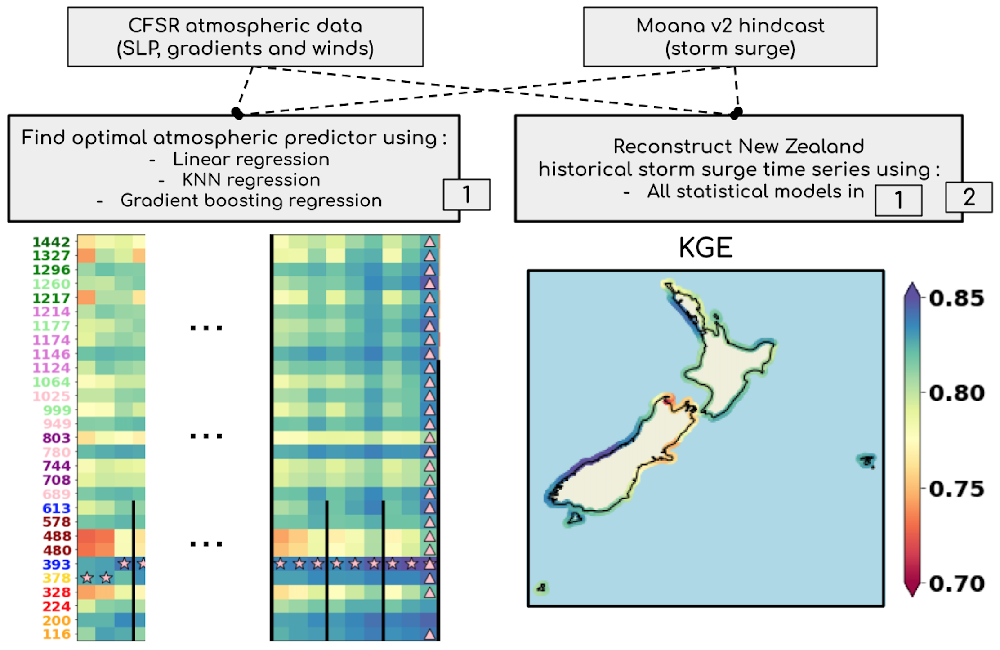
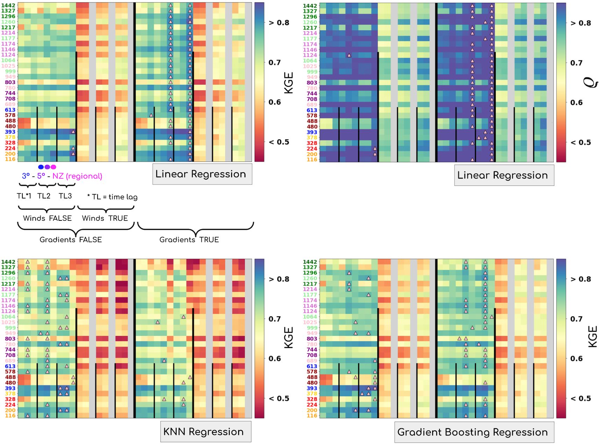

StormSurge Predictions in New Zealand
Contents


StormSurge Predictions in New Zealand#
This repository will contain all the updated information in the shared project between GeoOcean-MetOcean
more updated info at: https://drive.google.com/drive/folders/1P1fNSxZNj2Mv6H1cyK-QLoWC-QldzPZV?usp=sharing !!
below, a summary of the region and the data used in the project can be seen:

jupyter book summary here
related repos:
https://github.com/metocean/storm_surge (additonal python codes)
https://github.com/metocean/storm_surge_data (all storm surge data is hosted here)
https://gitlab.com/geoocean/teslakit (some math tools were created here)
Description#
With over 15000 km of coastline and around 150000 people living in low-lying coastal areas, coastal inundation is a major hazard to New Zealand. The cost to defend the associated buildings, infrastructure and assets is of the order of $10 billion. With global sea level rise and the increase in the intensity and frequency of extreme weather events, the threat posed by coastal flooding is only expected to become greater.
Storm surge is the rise in water level generated by wind and atmospheric pressure changes associated with tropical or mid-latitude storms. In conjunction with tides, it is one major driver of coastal flooding associated with storm events. Because local inundation is strongly modulated by the local shape of the coastline and the bathymetric slope, accurate storm surge prediction by the mean of traditional numerical models requires the use of very fine grids and is hence very resource intensive. This means that the performance of a live prediction system based on such methods will likely be subject to a trade-off between prediction accuracy, prediction speed and cost.
In this study, we explore the use of 3 data driven methods as an alternative to numerical methods to reconstruct the daily storm surge maximum levels along different locations in the coast of New Zealand. We first explore different atmospheric predictors with these 3 statistical models, to find the best possible predictor, and then, we reconstruct the storm surge daily maxima with the different statistical models along the entire coast, based on this predictor.
Results show very good performance for the best atmospheric predictor, obtaining values very close to 0.9 for the pearson correlation coefficient, and approximately 5cm for the root mean squared error metric. Given these results, we can conclude the methodology is appropriate to find a well performing atmospheric predictor that is able of reconstructing storm surge maximum levels, given a bunch of statistical methods, that can be applied to new variables, regions and problems.

Below, a summary of how the the different lineal models behave with different predictors and in different locations all around New Zealand is shown:

This image with more results can be seen here.
Finally, time series and scatter plots can be seen in different locations:

Data explanation#
Different datasets will be used in the project, but all of them belong to one of these categories:
Sea-level-pressure fields and winds, which can be the ERA5 or the CFSR (preferable) reanalysis
Storm surge hindcast data, which can be Moana v2 (preferable), DAC, CoDEC…
Storm surge real observations, where different datasets / organizations are involved !!
For the rest of the project and in the book, the majority of the examples are built over the datasets explained below:
The Moana v2 hindcast as the storm surge hindcast predictand
The CFSR sea-level-pressure fields and u10 and v10 wind components as the predictors (notice here that we also calculated the projected winds to a determined location in the islands, go to the end of this notebook to see results)
Some UHSLC tidal gauges as the “validators”, although more tidal gauges from different resources / organizations might be also helpful
data format is available in the figure below:

where also the spatial resolutions and explanations regarding the variables are shown:

Main contents#
Statistical tools, notebooks, data …
Project organization#
├── LICENSE
|
├── .gitignore
├── .gitattributes <- These are .git configuration files
|
├── _config.yml
├── _toc.yml <- These are config files for the jupyter-book
|
├── .github
| └── workflows
| └── deploy.yml <- YAMO file for the Github Actions deployment
|
├── references.bib <- Project bibliography with articles, books...
|
├── README.md <- The top-level README for developers using this project
|
├── data
│ ├── slp <- Sea-level-pressure fields from ERA5 / CFSR
│ ├── ss-hindcast <- Storm surge hindcast models
│ ├── ss-obs <- Storm surge real observations data
│ └── extra <- Additional data that might be helpful
│
├── media
| ├── images
| └── videos <- Some media files extracted from project workflows
│
├── notebooks <- Jupyter notebooks. This folder contains all the explanatory
| jupyter notebooks used in the project (.ipynb)
│
├── environment.yml <- The environment file for reproducing the analysis environment, e.g.
│ generated with `conda freeze > environment.yml`
├── requirements.txt <- Another environment file for reproducing the analysis environment, e.g.
│ generated with `pip-chill --no-version > requirements.txt`
│
├── sscode <- Source code for use in this project
│ ├── __init__.py <- Makes src a Python module
| ├── modules* <- Python scripts with different modules (*not a subfolder)
| | ├── data
| | ├── pca
| | ├── linear
| | └── ...
│ └── plotting <- Plotting scripts related with the mathematical ones
│ └── ...
│
└── report <- Project description in pdf format (contracts...):
MSVC1901_UoCantabria_01_V4 - Final.pdf
Installation#
Create an environment in conda#
To run the toolbox you first need to install the required Python packages in an environment. To do this we will see Anaconda, which can be downloaded freely here.
Once you have installed it on your PC, open the Anaconda prompt (in Mac and Linux, open a terminal window) and use the cd command to go to the folder where you have cloned this repository.
Create a new environment named ssnz with all the required packages:
conda env create -f environment.yml
Activate conda environment#
All the required packages have been now installed in an environment called ssnz. Now, activate this new environment:
conda activate ssnz
TODO: Add Docker options for the repository…#
Additional support:#
Data used in the project and a detailed explanation of the acquisition can be requested from jtausiahoyal@gmail.com or tausiaj@unican.es !!